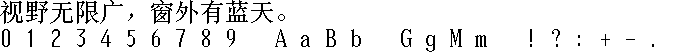

字样资料 / Sony PlayStation 2 中国版
中国版 PS2 · 24×24
已验证21,638个GBK映射字符，含20,902基本汉字及全部6,763个GB2312汉字；另95个同ROM可打印ASCII。非完整GBK／GB18030导出。 · 24×24 · 简体、繁体
放大观察 · 3×

原尺寸 · 1×
来源与字样信息
- 家族
- Sony PlayStation 2 中国版
- 排版说明
- 两行样图：中文＋同ROM ASCII；24×24完整存储框，字间1px、行间4px。实际advance与基线未核，不伪造12px半角字进。
- 字符框
- 24×24 px
- 字符范围
- 简体、繁体
- 样本文字
- 视野无限广，窗外有蓝天。
- 拉丁样文
- 0123456789 AaBb GgMm !?:+-.
- 覆盖说明
- 已验证21,638个GBK映射字符，含20,902基本汉字及全部6,763个GB2312汉字；另95个同ROM可打印ASCII。非完整GBK／GB18030导出。
- 缺字
- 样文无缺字
- 样张类型
- 原生24×24中文与同ROM ASCII；按完整存储框展示，运行时字进未核。
- 风格
- 未分类
- 用途
- 历史屏幕字库
- 字形来源
- 第三方保存的SCPH-50009完整ROM2；直接读取GB18030与FNTHANCH两个模块的24×24、1-bit扫描行。不是本次实机转储。EXTINFO有20030224-102654生成字段，不等于字体最初设计年份；原生位图存储已确认，原始手绘历史未独立证实。
- 授权状态
- 未确认开放再分发授权
- 许可说明
- ROM及字模未查到开放再分发或商用许可；第三方存档不等于授权。仅展示固定样图及无字模离线工具，不公开ROM、完整BDF或字模数组。
- 说明
- 中文逐行3字节、高位在左；ASCII取同一完整ROM2的FNTHANCH，未借用其他字体。ASCII墨迹至多12px宽，但每条记录24×24；图中保留完整框，24px字进仅为存储框展开约定，非实机度量。GBK另153个符号及其余GB18030槽未映射；不自动补字。GB2312／GBK的两处符号Unicode解释分别导出。查重含旧224样图、新增Windows13/20及可取得撤回项，非所有历史来源穷尽查重。
- 获取方式
自行取得并确认有权处理完整2MiB ROM2，按说明校验SHA，再用标准库脚本离线重绘固定PNG或选择本地BDF导出。只导出已核21,638个GBK字符＋95 ASCII；不接受512KiB欠量镜像，不联网、不执行固件、不内嵌字模、不覆盖输出。
- 来源
- 完整ROM2历史转储资料页
- 原生证据
说明：完整ROM2 SHA固定；ROMDIR独立解析及两模块SHA复核；所有原槽逐位解码交叉核对。24×24 row-major MSB 1-bit，未使用轮廓栅格化、缩放或补字。
source_sha256：fe61257af2cd2675256c2dcc5ffd78eae1a22d24f816571c2f927a93ed3bcc2d
sourceGlyphSlots：28591
unicodeMappedGbk：21638
basicHan：20902
gb2312Han：6763
printableAscii：95
asciiStorageWidth：24
asciiInkMaxWidth：12
runtimeAdvance：
查看原生设计来源
字体使用与再分发按原来源许可执行。